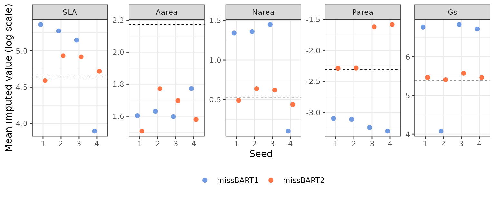
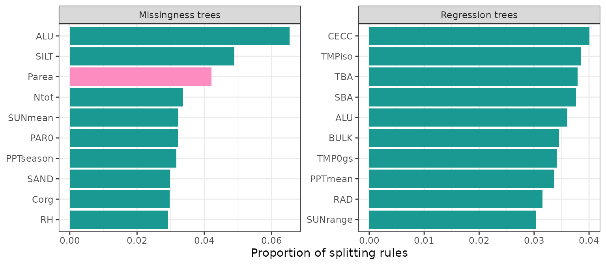

This article fits missBART1() and
missBART2() to the global Amax data of Maire et
al. (2015), the application in Section 7 of Goh, Soh, Parnell and Murphy
(2024, arXiv:2412.14946),
using version 0.2.0 of the package.
The data
The data hold five leaf photosynthetic traits for 2368 plants, together with 46 soil and climate covariates. The traits are specific leaf area (SLA), light-saturated photosynthetic rate (Aarea), leaf nitrogen (Narea), leaf phosphorus (Parea) and stomatal conductance (Gs), all modelled on the log scale. The covariates are complete, but most of the responses are not:
| Response | Missing | Per cent missing |
|---|---|---|
| SLA | 433 | 18.3 |
| Aarea | 12 | 0.5 |
| Narea | 652 | 27.5 |
| Parea | 1836 | 77.5 |
| Gs | 1353 | 57.1 |
The data are not distributed with the package, so this article shows
posterior summaries that were saved by Examples/rerun_global_amax.R.
Fitting the models
The settings are those of the paper: 5,000 burn-in and 5,000 kept iterations, 100 regression trees and 50 missingness trees.
library(missBART)
data <- as.data.frame(readxl::read_excel("Maire_dataset_for_Andrew.xlsx", sheet = "Data"))
y <- as.matrix(log(data[, c("SLA", "Aarea", "Narea", "Parea", "Gs")]))
x <- as.matrix(data[, which(names(data) == "PPTmean"):ncol(data)])
set.seed(1)
fit1 <- missBART1(x, y, n_trees = 100, burn = 5000, iters = 5000, thin = 1)
fit2 <- missBART2(x, y, n_reg_trees = 100, n_class_trees = 50, burn = 5000, iters = 5000, thin = 1)Each fit took about 1.4 minutes (with eight fits running at the same time).
Fit to the observed responses
Posterior mean predictions against the observed values, with 95% prediction intervals. The rug on the vertical axis shows the posterior means of the imputed values. These correspond to Figure 5 of the paper.


| Response | RMSE, missBART1 | RMSE, missBART2 | Coverage, missBART1 | Coverage, missBART2 | SD of observed |
|---|---|---|---|---|---|
| SLA | 0.40 | 0.40 | 0.95 | 0.95 | 0.62 |
| Aarea | 0.44 | 0.44 | 0.96 | 0.95 | 0.65 |
| Narea | 0.32 | 0.32 | 0.96 | 0.95 | 0.50 |
| Parea | 0.36 | 0.36 | 0.95 | 0.96 | 0.66 |
| Gs | 0.49 | 0.49 | 0.97 | 0.98 | 0.80 |
Both models fit the observed responses equally well, and the
prediction intervals have close to their nominal coverage. As the paper
notes, the two models differ in what they impute: missBART2
imputes values within the range of the observed data, while
missBART1 imputes values that are far from the observed
ones.
How stable are the imputations?
Each model was run from four different seeds. The plot shows the average imputed value of each response for each seed, next to the average of the observed values (dashed line).

The missBART2 imputations stay close to the observed
values and are broadly similar across seeds (Parea, with 78% missing,
varies the most). The missBART1 imputations are not: for
SLA, Narea and Gs, one seed imputes values well above the
observed ones where the other seeds impute values well below,
or the other way around. Within a chain the imputations are stable (the
two halves of each chain agree), so each chain has settled in a
different mode and does not move between them in 10,000 iterations.
The same shows in the probit coefficients. The table gives the
posterior mean of the coefficient of each response in the model for its
own missingness (a positive value means that large values are more
likely to be observed). It includes four chains with the update of the
missing responses used in the paper
(ymis_update = "marginal"), and four shorter chains with
the original R code of version 0.1.0, which takes about 29 minutes for
1,000 iterations on these data.
| Version | Iterations | Seed | SLA | Aarea | Narea | Parea | Gs |
|---|---|---|---|---|---|---|---|
| 0.2.0, conditional update (default) | 10,000 | 1 | -23.4 | 7.6 | -23.8 | 17.1 | -23.3 |
| 0.2.0, conditional update (default) | 10,000 | 2 | -26.4 | 1.7 | -33.1 | 19.5 | 19.9 |
| 0.2.0, conditional update (default) | 10,000 | 3 | -23.7 | 10.2 | -25.1 | 19.2 | -23.7 |
| 0.2.0, conditional update (default) | 10,000 | 4 | 21.6 | 0.3 | 17.4 | 18.7 | -25.4 |
| 0.2.0, marginal update | 10,000 | 1 | -6.2 | -0.7 | -11.3 | 12.1 | 12.7 |
| 0.2.0, marginal update | 10,000 | 2 | -8.9 | 2.1 | -10.0 | -14.2 | 11.6 |
| 0.2.0, marginal update | 10,000 | 3 | -21.0 | -3.0 | -1.4 | 17.2 | -16.6 |
| 0.2.0, marginal update | 10,000 | 4 | -11.0 | -0.8 | -4.7 | 18.2 | 11.8 |
| 0.1.0 (original R code) | 1,000 | 1 | -12.9 | -1.1 | -0.4 | 14.8 | 11.4 |
| 0.1.0 (original R code) | 1,000 | 2 | -10.9 | 3.1 | -8.3 | 10.2 | 10.9 |
| 0.1.0 (original R code) | 1,000 | 3 | -4.6 | -2.3 | 12.5 | 8.5 | 12.4 |
| 0.1.0 (original R code) | 1,000 | 4 | -10.0 | 0.0 | 10.5 | 13.8 | 11.9 |
| Paper (Figure 6, read by eye) | 10,000 | -15.0 | -3.0 | 5.0 | 18.0 | 13.0 |
Reading down the columns:
- SLA and Parea are consistent. In 11 of the 12 chains large values of SLA are more likely to be missing, and in 11 of 12 large values of Parea are more likely to be observed, as reported in the paper.
- Narea is not. The sign differs between chains of the original code, and most chains of the new code have the opposite sign to the paper.
- Gs depends on the update. The original code and the marginal update mostly agree with the paper (large values more likely to be observed), while three of the four chains with the conditional update settle on the opposite explanation.
- Aarea has only 12 missing values, so its coefficient is poorly determined.
So the multimodality is a property of the model on these data, and it is present in the original code too. Which mode a chain finds depends on the seed, and how often each mode is found depends on how the missing responses are updated. Because the chains do not move between modes, their relative posterior weights cannot be judged from these runs.
This is the well-known weak identifiability of selection models. With a probit regression for the missingness, a response that is mostly missing can be explained almost equally well by missing values that are all large or all small, and the sampler cannot cross between the two explanations. The practical consequences are:
- Conclusions about the direction of the missingness
mechanism from
missBART1on these data (for example, Figure 6 of the paper) are reliable for SLA and Parea, but depend on the chain for Narea and Gs. - Several chains from different starting values should be run and
compared before interpreting
missBART1coefficients or imputations. -
missBART2is the safer choice here.
Variable importance from missBART2
The ten predictors used most often in the missingness trees and in the regression trees (first seed), as in Figure 7 of the paper.

As in the paper, exchangeable aluminium (ALU) is among the most important predictors of the missingness and Parea is the response used most often in the missingness trees. Across the four seeds Parea ranks 3, 2, 10, 3 out of 51 predictors, and the three most used predictors are: ALU, SILT, Parea; ALU, Parea, SILT; ALU, SAND, SUNmean; ALU, CLAY, Parea. The importances are spread thinly over many correlated covariates, so the exact ordering varies from seed to seed.